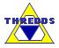

TDS Tutorial Schedule
Monday
- Install Java and Tomcat
- Running tomcat
- Deploy thredds.war
- Browse distribution test catalogs and datasets
10:30 Break
- Tomcat and TDS Directories
- TDS Configuration Catalog
- Overview
- Examples: Fix enhanced catalog; add model data
- View catalogs and datasets in ToolsUI and IDV
12:00 Lunch
- Important Tomcat Directories: conf, logs, webapps, exec
- Configuring Tomcat in server.xml
- Ports: 8080, 8443, 8009??
- Host localhost
- Turning on Access Logging
- Tomcat Security Illustrated By Enabling the Tomcat Manager
- Use a Firewall (covered elsewhere)
- Using Authentication to Restrict Access to Tomcat Applications
- The Tomcat Manager Application
- tomcat-users.xml
- Configuring tomcat-users to Allow a User to Execute the Manager
- Starting and Stopping Tomcat: watching log files, simple start up troubleshooting
- Using Digested Passwords
- Enabling Secure Communication Via SSL
- Creating a Self-Signed Certificate
- Configure Tomcat to Use SSL Encryption: server.xml (again)
- Other Tomcat Security Resources
2:00 More TDS Configuration Catalogs (Ethan)
3:00 Break
3:30 Tools for Managing TDS (John)
Tuesday
8:30 Enhanced Catalogs (Ethan)
- Annotated Example
- Metadata Extraction
- Digital Library Harvesting
- Metadata standards
9:30 Using NcML in TDS (John)
10:30 Break
- Creating user "tomcat" with
limited permissions and Tomcat install location.
- Tomcat distribution Upgrade
- Using a Firewall to close all
ports except ports 8080 and 8443.
- Using IP Filters to deny access to
users abusing the TDS
- Disable Web Indexers
- Upgrading SSL security level by
creating a CA (Certificate Authority) signed key
- Configure Tomcat start/stop scripts
- Remove Default Tomcat Applications
- Configuring Apache/Tomcat so that Tomcat runs as a proxy
through Apache
12:00 Lunch
1:00 Advanced TDS management (John)
2:30 Break
- What is the IDD?
- Configuring the TDS to use IDD catalogs.
- Configuring the IDD/LDM to make predetermined data
structures.
- Managing the IDD datasets.
- Performance enhancements by GRIB indexing
4:00 Serving Datasets - Examples
- The LEAD Project use of TDS (Tom)
- Create an Archive with the Thredds Data Repository (TDR) (Anne)